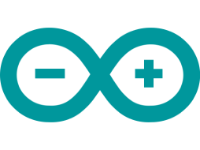

Introdução
Um dos componentes vitais para a vida humana é o gás oxigênio. Elemento presente em 21% da atmosfera e responsável por diversas reações químicas, dentre elas, a respiração aeróbica. No entanto, a constante liberação de gases poluentes dificulta sua utilização.

Quem somos nós?
Nós somos a Fresh Air, uma empresa biotecnológica que esta sendo planejada com o intuito de visar a sustentabilidade através da aplicabilidade do arduino em um aplicativo, no qual informará a qualidade do ar baseado na quantidade de gases poluentes analisada pelos sensores, propagando conhecimento para a população acerca deste tema.
Problema
A poluição está entre os principais causadores de doenças respiratórias devido substâncias extremamente nocivas. Problema no qual é recorrente nas grandes cidades, devido a quantidade de indústrias e automóveis, uma vez que esses são os principais responsáveis pela emissão de gases poluentes. Logo, gases como monóxido de carbono, gás carbônico e dióxido de enxofre resultam na poluição e representam um risco à saúde humana e as condições do planeta.
Impactos na Humanidade
O gás CO é liberado pela queima de combustíveis fósseis. Esse gás interage e se liga às hemácias do sangue com mais afinidade do que o oxigênio, impedindo a ligação desse importante componente com as hemácias, gerando prejuízo a saúde ou até mesmo a morte por intoxicação. Por ser um gás de efeito estufa, sua alta concentração contribuí para o aquecimento global.
Como a solução mitiga isso
Com a implementação da nossa aplicação, a população terá acesso rápido e prático as informações sobre a qualidade do ar em uma determinada área. Assim, evitariam tais locais devido ao excesso de gases prejudiciais à saude.
Solução

O circuito com arduino para medir a qualidade do ar
Envio das leituras para o banco de dados
Envio e recebimento de informações para o banco de dados
Um aplicativo para mostrar ao usuário os resultados e recomendações
ARDUINO
O Arduino UNO é a peça principal do projeto, responsavel por conectar todos os componentes.

O sensor MQ-135 é responsável por medir a quantidade de gases poluentes presentes no ar.

O sensor NEO 6M é responsável por informar a sua localização obtida a partir de diversos satélites.

O sensor ESP-01 é responsável por conectar o Arduino internet e, assim, enviar os dados para um banco de dados.

O sensor DHT-11 é responsável por medir a temperatura e umidade do ar.

Aplicativo
A aplicação conta com um aplicativo que mostra, em tempo real, a qualidade do ar de acordo com os testes realizados pelo arduino e o número de reportes que aquela área recebeu. Ademais, conta com recomendações sobre permanência e conduta nas áreas analisadas.
Toda camada de cadastro, login e visualização será feita no aplicativo.